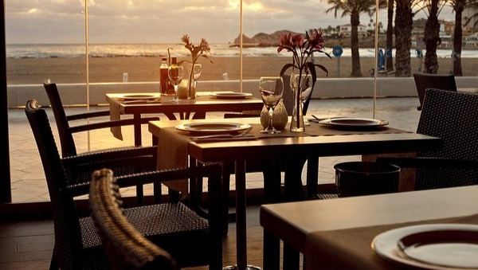
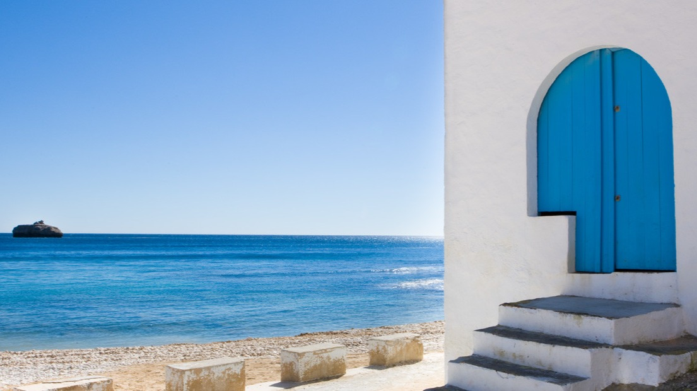

03730 Jávea, Alicante
Platos valencianos y mediterráneos clásicos en un restaurante refinado con fachada de cristal ubicado en un paseo marítimo.

03730 Jávea, Alicante
Un lugar encantador en la costa con vistas al mar y un ambiente relajante para disfrutar.